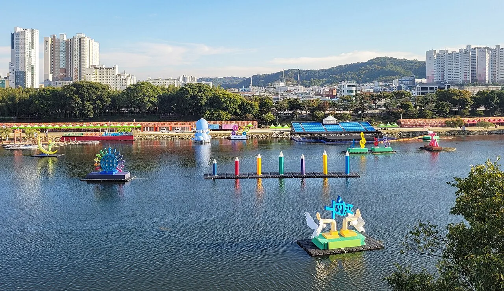
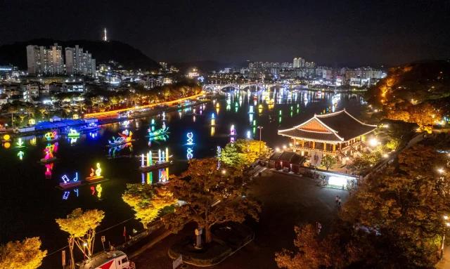
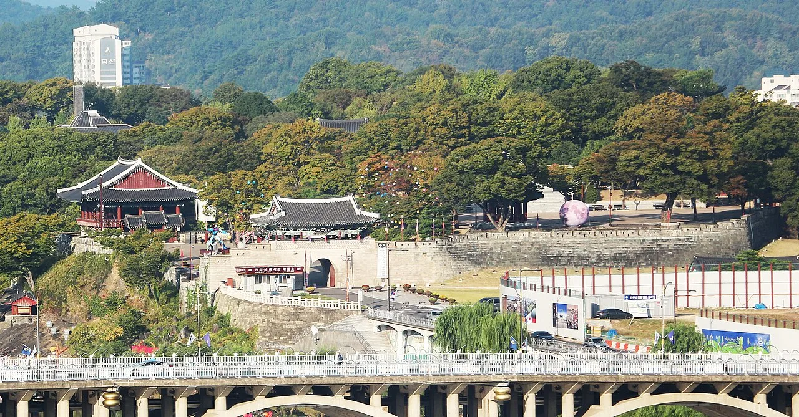
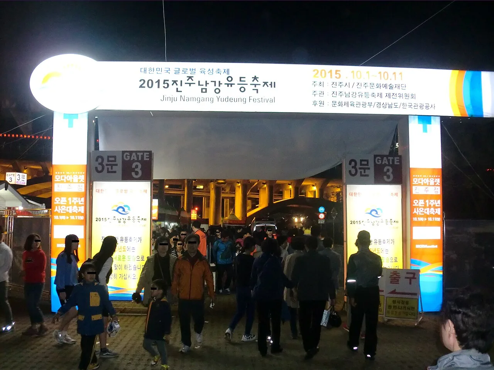
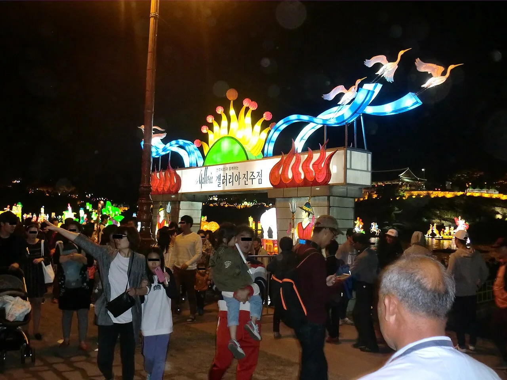
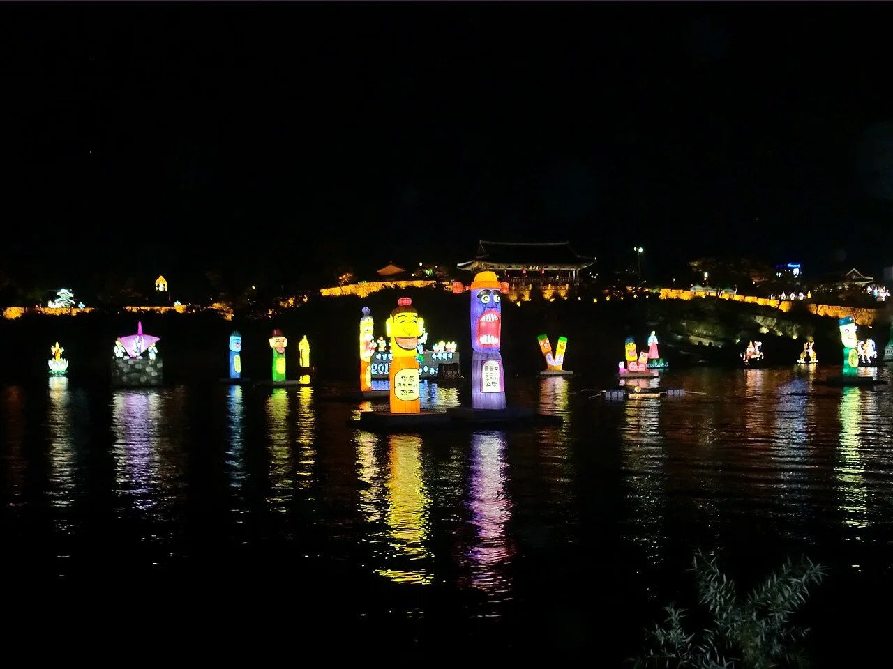

▲ 남강에 띄운 유등. 2026년 축제는 10월 3일부터 18일까지 열린다 ⓒ Wikimedia Commons
1. 2026년 일정부터 정리하면
2026 진주남강유등축제는 10월 3일(토)부터 10월 18일(일)까지 열립니다. 장소는 진주성과 진주 남강 일원입니다.
올해 주제는 '역사의 강, 평화를 담다 – POWER OF KOREA'입니다.
| 구분 | 시간 |
|---|---|
| 유등 점등 | 18:00 ~ 24:00 |
| 부교 · 부스 | 13:00 ~ 23:00 |
여기서 이미 자차 여행자의 계획이 정해집니다. 이 축제의 본편은 해가 진 뒤에 시작합니다. 즉 주차와 귀가가 모두 야간에 이뤄집니다.

▲ 낮에 본 남강. 조형물은 이미 떠 있지만 불은 들어오지 않는다. 축제장 바로 건너편이 시가지라는 점이 주차 문제의 출발점이다 ⓒ Wikimedia Commons
2. 공지된 주차장은 셋, 모두 축제장 밖

▲ 축제장은 남강과 진주성을 낀 도심 한복판이다. 주차장이 모두 이 구역 바깥에 놓일 수밖에 없는 이유가 여기 있다 ⓒ 경남신문
공식 안내된 주차장은 세 곳입니다.
| 주차장 | 성격 |
|---|---|
| 혁신도시 (윙스타워 앞) | 도심 외곽 대형 부지 |
| 물초울공원 | 남강 인근 공원 |
| 진주종합경기장 | 대형 체육시설 주차장 |
세 곳 모두 진주성 정문 앞이 아닙니다. 대형 축제에서 흔한 방식으로, 외곽에 차를 세우고 축제장까지는 다른 수단으로 접근하게 만드는 구조입니다.

▲ 남강을 끼고 있는 진주성. 축제장은 이 성곽과 강변 일대에 걸쳐 있다 ⓒ Wikimedia Commons
다만 현재 시점에서 셔틀버스 운영 정보는 공지되지 않았습니다. 축제 공식 홈페이지의 관련 페이지는 "콘텐츠 준비중"으로 표시돼 있습니다. 교통 통제 계획과 부교 이용료도 마찬가지입니다.
그래서 지금 할 수 있는 준비는 두 가지입니다. 세 주차장의 위치를 미리 확인해 두는 것, 그리고 셔틀 공지가 올라오는 시점에 다시 확인하는 것입니다. 문의는 진주문화예술재단(055-761-9111)으로 하면 됩니다.
3. 사람이 몰리는 날은 정해져 있다
16일 내내 똑같이 붐비지는 않습니다. 대형 프로그램이 있는 날이 갈립니다.
| 날짜 | 프로그램 |
|---|---|
| 10월 4일 | 고유제(18:00), 상징등 거리행렬(18:30), 초혼점등(19:30), 드론 라이트쇼·수상불꽃놀이(20:00) |
| 10월 8일 | 드론 라이트쇼 및 불꽃놀이 |
| 10월 18일 | 드론 라이트쇼 및 불꽃놀이 (폐막) |
10월 4일이 압도적입니다. 거리행렬은 도로를 쓰는 프로그램이라 주변 교통에 직접 영향을 줍니다. 18시 30분에 시작한다면 그 전후로 도심 진입이 어려워집니다.
불꽃놀이가 있는 날은 귀가가 더 문제입니다. 20시에 시작한 프로그램이 끝나면 수만 명이 동시에 주차장으로 향합니다. 이때 빠져나가는 데만 한 시간 이상 걸리는 것이 대형 축제의 일반적인 패턴입니다.

▲ 축제장 게이트로 몰리는 인파(2015년 축제 당시). 야간 축제는 퇴장이 한꺼번에 이뤄진다 ⓒ Wikimedia Commons
4. 겹치는 축제가 하나 더 있다
진주는 10월에 축제가 몰리는 도시입니다. 제75회 개천예술제와 2026 코리아드라마페스티벌이 10월 9일부터 18일까지 열립니다.
유등축제 기간과 열흘이 겹칩니다. 즉 10월 9일부터 18일까지는 세 개의 행사가 같은 도시에서 동시에 진행됩니다.
문제는 장소까지 겹친다는 점입니다. 코리아드라마페스티벌은 경남문화예술회관과 진주시 장대동 남강둔치 일원에서 열립니다. 유등축제의 무대인 남강 일원과 같은 공간입니다.
| 행사 | 기간 | 비고 |
|---|---|---|
| 남강유등축제 | 10월 3~18일 | 진주성·남강 일원 |
| 개천예술제 | 10월 9~18일 | 제75회 |
| 코리아드라마페스티벌 | 10월 9~18일 | 경남문화예술회관·남강둔치 |
| KDF 콘서트 | 10월 9~17일 매일 20:30 | 남강둔치 특설 야외무대 |
| 코리아드라마어워즈 | 10월 10일 17:00 | 경남문화예술회관 대공연장 |
특히 10월 9일부터 17일까지는 매일 밤 8시 30분에 남강둔치에서 콘서트가 열립니다. 유등 점등 시간대와 정확히 겹칩니다. 이 시간대에 남강 주변으로 인파가 두 배로 몰린다고 보면 됩니다.

▲ 점등 이후의 남강변. 행사가 겹치는 열흘 동안은 이 밀도가 밤 내내 유지된다고 보는 편이 안전하다 ⓒ Wikimedia Commons
이 열흘을 어떻게 볼지는 목적에 따라 갈립니다. 볼거리를 최대한 챙기려면 이 기간이 정답입니다. 반대로 주차와 이동을 편하게 하려면 10월 5~8일 평일이 훨씬 낫습니다. 개막 주말(3~4일)과 겹치는 열흘을 피하면 남는 날이 그 구간입니다.
5. 자차 전략 — 시간대로 푸는 문제
첫째, 오후에 도착해 낮 프로그램부터 보십시오. 부교와 부스는 13시부터 운영합니다. 13~17시 사이에 주차하면 자리를 고를 수 있고, 점등 시각인 18시를 현장에서 맞을 수 있습니다.
둘째, 퇴장 시각을 앞당기거나 늦추십시오. 점등은 24시까지 이어집니다. 22시 전에 나오거나, 반대로 23시 이후에 여유 있게 나오는 편이 낫습니다. 불꽃놀이 직후는 최악입니다.
셋째, 주차장을 미리 하나로 정하십시오. 세 곳 중 어디에 세울지는 귀갓길 방향으로 정하는 것이 좋습니다. 남해고속도로로 붙을지, 통영대전고속도로로 갈지에 따라 유리한 주차장이 다릅니다.

▲ 유등은 물 위에 떠 있어 강 양쪽 어디에서도 보인다. 굳이 성 안으로 들어가지 않아도 되는 이유다 ⓒ Wikimedia Commons
넷째, 강 건너편도 선택지입니다. 유등은 물 위에 떠 있어 강 양안 어디에서도 보입니다. 인파가 몰리는 진주성 쪽 대신 반대편 강변에서 보고 빠져나오는 방법이 있습니다.
6. 정리
이 축제에서 자차 여행의 승부처는 점등 시각이 아니라 퇴장 시각입니다. 18시에 켜지는 등을 보러 가는 일은 어렵지 않습니다. 어려운 것은 24시까지 이어지는 행사가 끝난 뒤 도시를 빠져나오는 일입니다.
그래서 계획의 순서를 뒤집는 편이 낫습니다. 몇 시에 도착할지가 아니라 몇 시에 어느 방향으로 나갈지를 먼저 정하고, 그에 맞는 주차장을 고르는 것입니다.
마지막으로 셔틀 공지는 아직 나오지 않았습니다. 축제 개막이 한 달 남은 시점이므로, 출발 전에 공식 홈페이지 공지사항을 한 번 더 확인하시기 바랍니다.